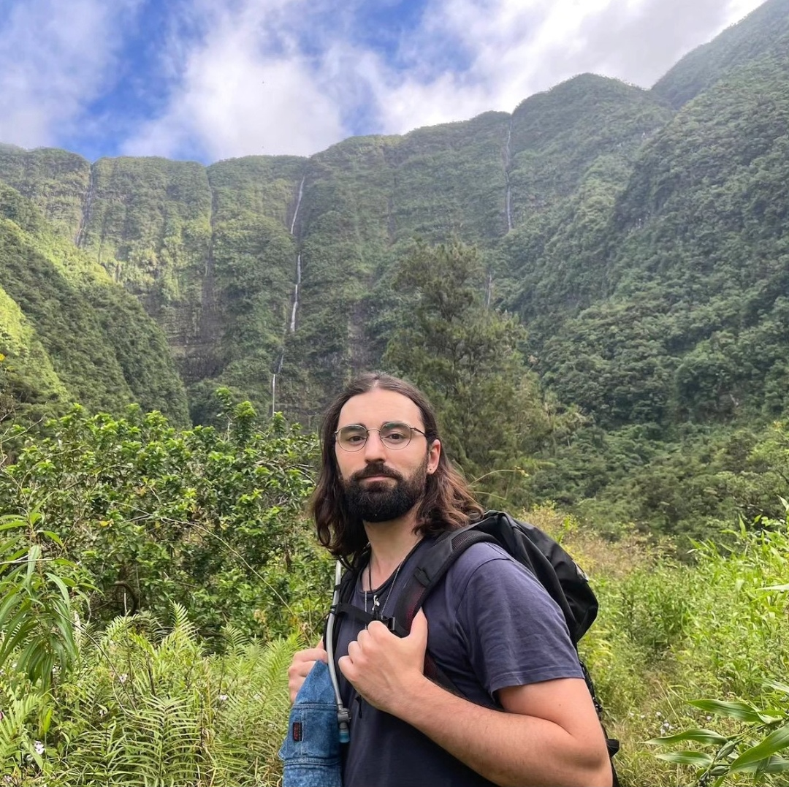

About
A little about who I am and what I do.

Hi, I'm Nicolás Arrieta Larraza, a Machine Learning Engineer with 4 years of industry experience developing and deploying AI solutions, mainly around audio and speech processing.
I'm passionate about using data to address real-world challenges, and I'm actively involved in nature and wildlife conservation initiatives. My work has been published at ICASSP and EUSIPCO 2026.
Work Experience
-
03/2022 – 08/2026
Machine Learning Engineer
Bang & Olufsen · Hybrid (France and Denmark)- Design and implementation of audio processing algorithms with Deep Learning.
- Deployment in embedded systems including Tensilica HiFi DSP and ARM platforms.
- Scope: low-latency, real-time speech processing, audio detection and classification.
-
09/2021 – 11/2021
Teacher Assistant, "Mathematics for Machine Learning"
University of Twente · Enschede, the Netherlands- Organized lessons to help and guide students in diverse ML topics.
-
10/2019 – 07/2020
Big Data Engineer Intern
Kairos Digital Solutions · Madrid, Spain- Development of an ambient sound classification model with IoT devices.
-
06/2019 – 09/2019
Software Developer Intern
NTT Data · Madrid, Spain- Back-end development of a web application for the Spanish national mail service.
Education
-
2021 – 2022
M.Sc. in Computer Science
University of Twente · Enschede, the Netherlands -
2020 – 2021
M.Sc. in Applied Mathematics and Modelisation
Université Sophia Antipolis · Nice, France -
2015 – 2020
B.Sc. in Telecommunication Engineering
Polytechnic University of Madrid · Madrid, Spain
Publications
-
ICASSP 2026
Fast-ULCNet: A fast and ultra low complexity network for single-channel speech enhancement
2026 IEEE International Conference on Acoustics, Speech, and Signal Processing · First author -
EUSIPCO 2026
A two-step approach for speech enhancement in low-SNR scenarios using cyclostationary beamforming and DNNs
2026 European Signal Processing Conference · Second author with equal contribution
More details on the Research page.
AI for Good
I volunteer my machine learning skills on projects for nature, wildlife conservation and health, from acoustic monitoring of forests to identifying individual animals with computer vision.
Young AI Leaders community
Member of the Young AI Leaders community.
Sound detection for illegal mangrove logging
Personal project in collaboration with Guardianes de Dzinintún to develop a sound detection system for illegal logging in the Dzinintún mangrove forest.
Whale fin identification system
Personal project in collaboration with Atlantic Eco Experience to develop a short-finned pilot whale detection and fin identification system via computer vision.
Elephant rumble detector
Volunteer collaboration with researchers at Cornell and Stanford universities to develop a forest elephant rumble detector.
Seal face identification
Volunteer collaboration with researchers at Colgate University to develop a seal face detector to track individual seals.
Post-surgery complication prediction
University research volunteer project on machine learning techniques for predicting esophageal post-surgery complications in patients.